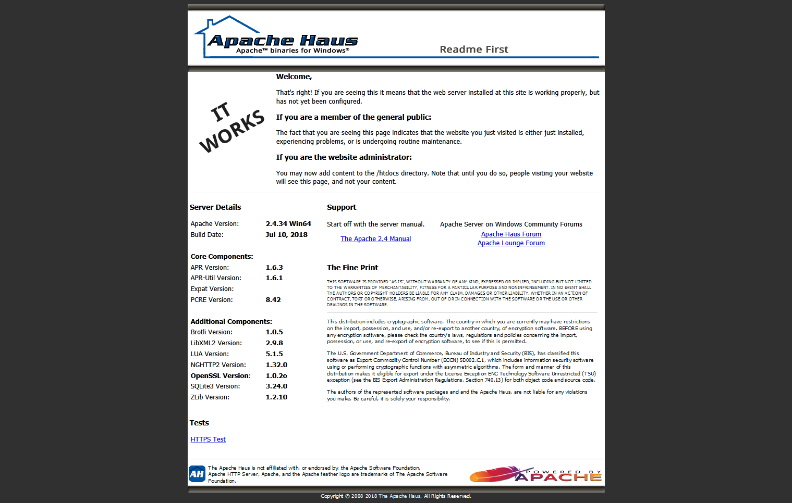
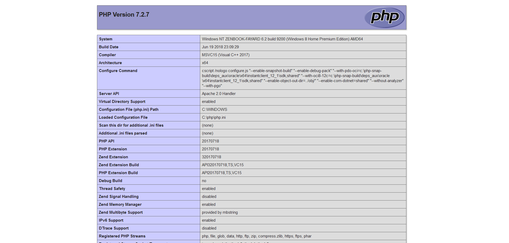

Installer un serveur web sur Windows à la main (sans Wampserver)
Introduction
La façon la plus simple d'installer un serveur web complet sur Windows est d'avoir recours à WAMP. L'avantage c'est que c'est très facile à utiliser : on ne configure rien à la main ou presque, tout fonctionne tout de suite. Problème :
- Il faut tout compiler soit même donc il faut au préalable installer je ne sais combien de paquets C++ Redistribuable.
- C'est lourd ! WAMP vient avec pas mal d'outils, c'est pratique pour du développement mais on a pas forcément besoin de tout !
- Rien configurer n'est pas formateur.
Une alternative à WampServer qui a l'air un peu mieu fait est Laragon (voir la vidéo de Grafikart). Maintenant que PHP offre la possibilité de faire tourner un serveur de développemment intégré, l'installation d'Apache pour du développement peut devenir superflue. Pour un serveur en production, il est préférable d'utiliser des distributions GNU/Linux dédiées. Comme je ne voulais pas installer tout WAMP, j'ai tout installé à la main. C'est ce qu'on va faire dans cet article ! Ce que l'on va installer :
- Chocolatey : un gestionnaire de paquets sur Windows, histoire de se familiariser avec un concept assez linuxien
- PHP : langage interprété par les serveurs
- MySQL (MariaDB) : un serveur de bases de données
- Apache : quand même assez utile pour ne pas toujours avoir à lancer le serveur intégré de PHP, et permet de faire des tests grandeur nature.
- phpMyAdmin : Interface web pour gérer les bases de données.
Installation de Chocolatey
Chocolatey est un gestionnaire de paquets qui fonctionne principalement en ligne de commande (cmd ou Windows Powershell). Il permet de facilement installer, mettre à jour et désinstaller des programmes sans passer par les installateurs classiques qui ont parfois tendance à ajouter des programmes tiers inutiles ou indésirables. De nombreux programmes sont disponibles sur le dépôt de Chocolatey comme Thunderbird, Firefox, VLC, VSCode et j'en passe. On va ici utiliser Powershell.
Ouvrez Powershell en administrateur (clic droit sur l'icône Windows > Windows Powershell (admin)) et entrez la commande
Set-ExecutionPolicy Bypass -Scope Process -Force; iex ((New-Object System.Net.WebClient).DownloadString('https://chocolatey.org/install.ps1'))
Installation et configuration de PHP
choco.exe install php --params "/ThreadSafe /InstallDir:C:\php"
Le paramètre /InstallDir est le dossier où sera installé PHP. Si on envisage d'installer plusieurs versions de PHP, on peut par exemple opter pour C:\php\7.2 pour la version 7.2. Pour vérifier que PHP est bien installé, on peut ouvrir cmd et demander la version de PHP :
PS > php -v PHP 7.2.7 (cli) (built: Jun 19 2018 23:14:45) ( ZTS MSVC15 (Visual C++ 2017) x64 ) Copyright (c) 1997-2018 The PHP Group Zend Engine v3.2.0, Copyright (c) 1998-2018 Zend Technologies
On charge quelques extensions importantes. Dans le dossier de PHP se trouve un fichier php.ini, c'est un fichier de configuration chargé lorsque l'on démarre PHP. On active les extensions en décommentant les lignes correspondantes ; il suffit d'enlever le point virgule en début de ligne. On active quelques extensions nécessaires :
extension=curl ; utile pour télécharger extension=intl ; utile pour les traductions extension=mysqli ; parle d'elle-même extension=pdo_mysql
Installation et configuration d'Apache
Chocolatey utilise la distribution d'Apache Haus.
choco.exe install apache-httpd --params "/installLocation:C:\apache2 /port:80"
Les paramètres donnés permettent de définir le dossier d'installation et le port qu'Apache écoutera. Pour vérifier l'installation, aller à l'adresse localhost avec votre navigateur, une page devrait apparaître comme ceci :

Dans le dossier d'Apache se trouve un dossier conf et dans celui-ci un fichier httpd.conf. On ajoute ces lignes au début de celui-ci :
AddHandler application/x-httpd-php .php AddType application/x-httpd-php .php .html LoadModule php7_module "c:/php/php7apache2_4.dll" PHPIniDir "c:/php"
Les deux premières lignes indiquent en gros à Apache qu'il faut associer les extensions .php et .html à PHP. La troisième et la quatrième indiquent où se trouve PHP et un module nécessaire à Apache.
Il faut également indiquer à Apache de lire en priorité les fichiers PHP, on cherche DirectoryIndex et on ajoute index.php :
<IfModule dir_module> DirectoryIndex index.php index.html </IfModule>
Maintenant que l'on a modifié la configuration d'Apache, il faut redémarrer le service. Deux méthodes :
- utiliser l'interface graphique
ApacheMonitor.exesitué dans le dossierbind'Apache ; - aller dans les services de Windows et redémarrer le service Apache à la main.
Pour vérifier que ça a marché, on peut créer un fichier dans le dossier htdocs (là où se trouvent les fichiers de vos sites) un fichier index.php qui comportera :
<?php phpinfo() ?>
En se rendant à localhost, on devrait alors voir :

Installation de MariaDB et de phpMyAdmin
choco.exe install mariadb
Au moment où j'écris ce mémo, la commande précédente est cassée, il faut donc passer par le site officiel (rien de grave). Pendant l'installation, il faut créer un compte root, bien mémoriser le mot de passe ! Pour gérer les bases de données, on peut utiliser l'outil HeidiSQL fourni avec MariaDB ou bien la célèbre interface web phpMyAdmin. Deux moyens de l'installer : en téléchargeant l'archive sur le site officiel ou bien avec Composer, le gestionnaire de dépendances PHP.
choco.exe install composer
Puis dans le dossier htdocs :
composer create-project phpmyadmin/phpmyadmin
Dans le cas où on utilise l'archive, la décompresser dans le dossier htdocs. On se rend ensuite à l'adresse localhost/phpmyadmin/setup. En bas, choisir Français, cliquer sur Télécharger, et copier le fichier conf.inc.php obtenu à la racine de phpMyAdmin (htdocs/phpmyadmin/). On peut alors se connecter à phpMyAdmin en root avec le mot de passe indiqué lors de l'installation. A la première connexion, phpMyAdmin n'est pas configuré ; dans le bandeau en bas, cliquer sur Analyse du problème, puis sur Créer. Ça y est, la configuration est terminée ! L'ordinateur possède maintenant une pile WAMP ! On peut commencer à développer des sites web dans htdocs.
Remarques sur les mises à jour
Avec Chocolatey, il est en général facile de tout mettre à jour, à coup de choco.exe update all. Cependant, cela ne prend pas en compte les arguments que l'on a saisis lors des installations ! Pour celles-ci il faut choco.exe update le programme spécifique avec les même arguments. On fera alors un choco.exe update --exclude=<paquets sensibles> all.
Commentaires
Comments powered by Disqus